Der Schmackofatz 6,50 €
Das Original im Fladenbrot. Der Name ist Programm – und Programm ist Pflicht.
Dönerhaus seit dem ersten „Schmackofatz“
Der einzige Döner, bei dem die Soße direkt aus Elysium kommt. Frisch vom Spieß, mit Liebe gerollt und von Chef Götterfunken persönlich für schmackofatz befunden.

Alle Gerichte mit Salat, Zwiebeln und Soße nach Wahl: Knoblauch, Kräuter, scharf oder Soße aus Elysium (Geheimrezept, fragen Sie nicht).
Chef Götterfunken
Er hat das Wort „Schmackofatz“ geprägt – wir haben einfach einen Dönerladen drumherum gebaut. Wenn der Chef probiert, gibt es genau zwei Urteile: „Schmackofatz!“ oder er probiert so lange weiter, bis es schmackofatz ist.
Vom Stammgast bis zur Laufkundschaft – ein Auszug aus unserem Gästebuch.
„Absolute Bubensahne! Ich nenn den Laden ab heute nur noch so. Das Fleisch? Bubensahne. Die Soße? Bubensahne. Der Chef? Absolute Bubensahne.“
„Ich hab hier schon mal gekellnert – aber nur um auszuhelfen, nicht um Geld zu verdienen. Das Trinkgeld hab ich direkt in Baklava reinvestiert. Nachhaltig.“
„Der nette junge Mann sagt ständig ‚Schmackofatz‘. Ich weiß nicht, was das heißt. Aber genau so schmeckt es.“
„Um drei Uhr nachts der einzige Lichtblick. Ein Stern Abzug, weil die Soße aus Elysium schon wieder aus war.“
„Knoblauchsoße mit langem Abgang, zarte Kräuternote, im Finale ein ganzer Chor. Ich höre die Neunte. Mit alles.“
„Der Vegetarische Funke ist top. Ich hab gefragt, ob der Falafel frisch ist. Er hat ‚Schmackofatz‘ gesagt. Ich nehm das als Ja.“
Schmackofatzi Dönerhaus
Elysiumstraße 9
12345 Schmackhausen
Direkt am Platz, fünf Gehminuten vom Bahnhof. Fahrradbügel vor der Tür.